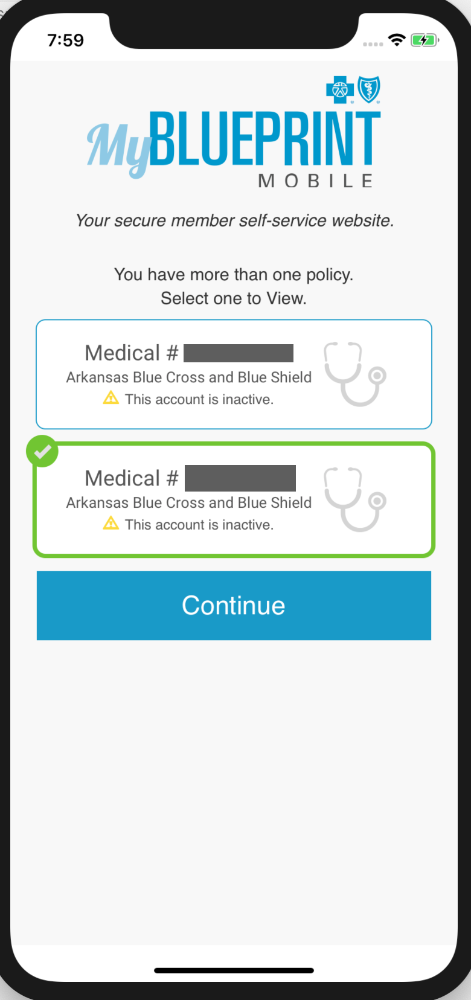
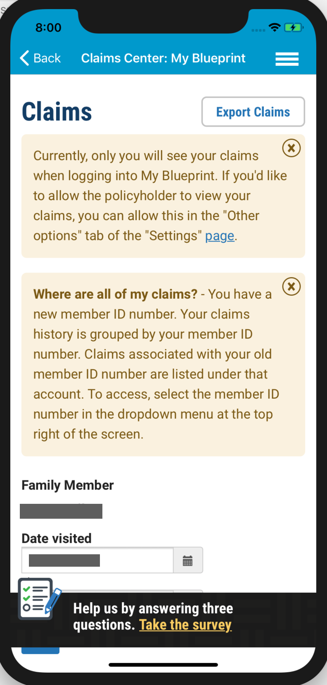
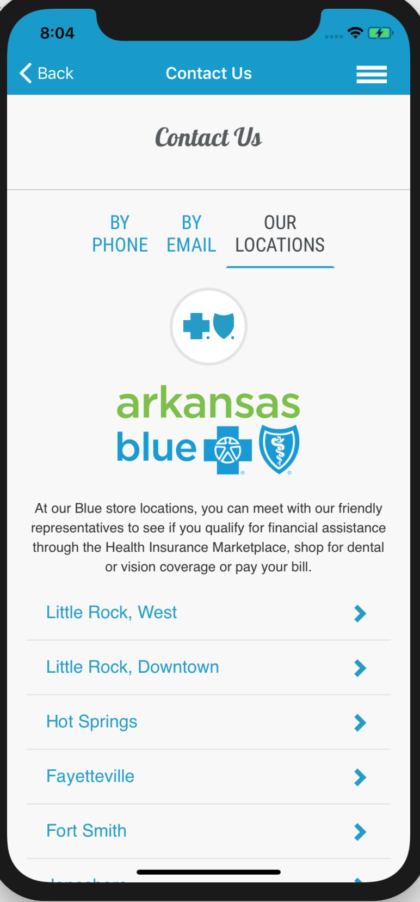

The app
A look at My BluePrint
The member self-service experience assessed in this analysis. Click any screen to enlarge.






A deep, structured analysis of the Blue Cross Blue Shield member app — turning performance data, store feedback, exception patterns and accessibility gaps into a clear, prioritized roadmap for what to fix, and when.
The assessment examined the My BluePrint experience across five dimensions — each scored, evidenced, and translated into concrete, actionable findings.
Profiled responsiveness, load times, and bottlenecks affecting day-to-day member use.
Mined ratings and reviews to surface recurring themes and member pain points.
Identified opportunities to deepen usage, retention, and self-service adoption.
Ranked high-frequency crashes and errors by impact for targeted remediation.
Audited compliance gaps to ensure the app is usable by every member.
Findings were sequenced into a phased roadmap that schedules each area by timeframe and order, so the team tackles the most critical, highest-priority issues before moving down the list.
Resolve the highest-frequency exceptions and critical performance issues impacting members most.
Close accessibility gaps to meet compliance and make the app usable for everyone.
Address recurring App Store feedback themes and polish the rough edges members flagged.
Roll out engagement enhancements that increase adoption and long-term retention.
The member self-service experience assessed in this analysis. Click any screen to enlarge.



The engagement paired hands-on evaluation of the Xamarin.Forms app with data from the stores and telemetry — packaged as a prioritized roadmap the team could execute against with confidence.